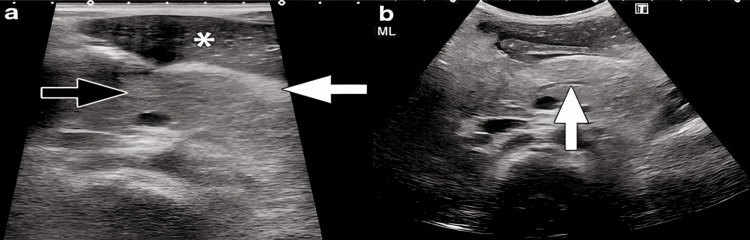
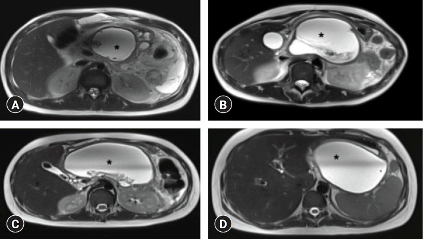
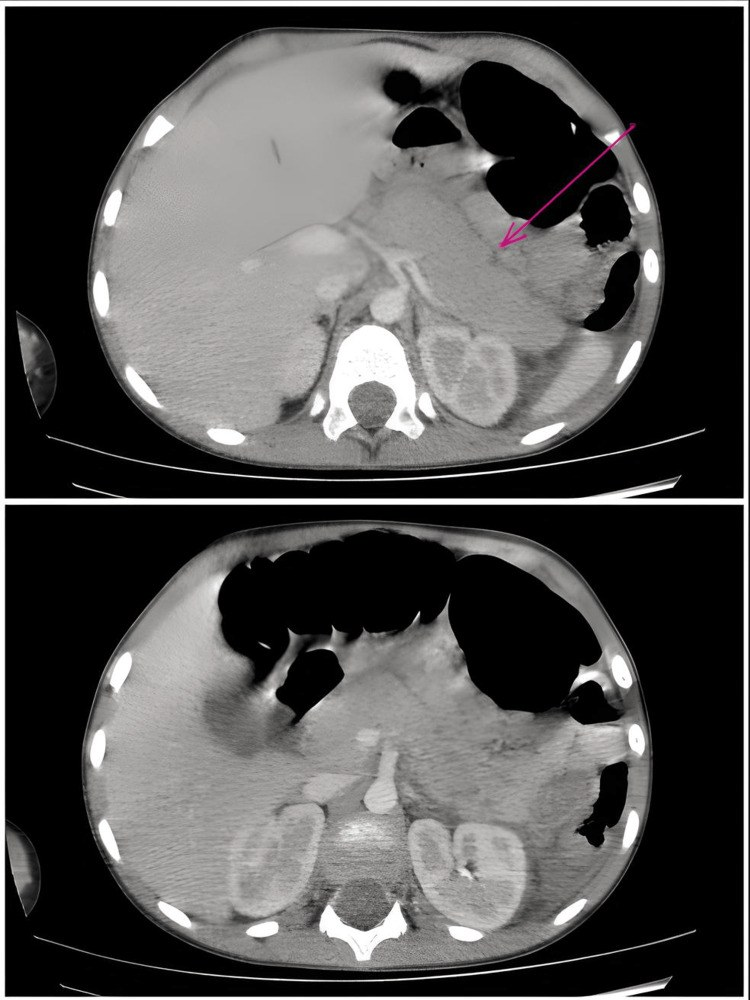

6135 — Viêm tụy cấp ở trẻ: tiêu chuẩn INSPPIRE, phân độ NASPGHAN và ổ dịch quanh tụy theo thời gian
Tags: pattern:viem-tuy pattern:tu-dich-quanh-tuy pattern:hoai-tu-tuy vung:tuy vung:o-bung protocol:SA-bung protocol:CT-bung-co-can-quang protocol:MRI-MRCP score:INSPPIRE-2018 score:NASPGHAN-2017 score:CTSI incidentaloma:khong
Mức chắc chắn (certainty): tổng hợp y văn (literature synthesis) — ghép định nghĩa INSPPIRE và phân độ NASPGHAN 2017 (qua bài 2026, PMC13510817), nghiên cứu hình ảnh 74 trẻ (Turk Arch Pediatr 2023, PMC9885787), phân tích gộp 44 nghiên cứu về dự báo độ nặng (Front Pediatr 2022, PMC9561825), phân tích gộp tiến triển AP → ARP → CP (Clin Exp Pediatr 2026, PMC12877302), dịch tễ Đài Loan 2.127 ca (JPGN 2019, PMC6314501), loạt 57 trẻ Ba Lan (Children 2025, PMC12732265), loạt 15 ca có ảnh US/CT (Cureus 2025, PMC12433681), 11 trẻ đặt stent LAMS cho WON (Clin Endosc 2025, PMC12314618), loạt 75 trẻ Thái Lan (2022, PMC9722370) và khảo sát tuân thủ hướng dẫn ở 60 trẻ Iran (BMC Pediatr 2022, PMC9336120).
Câu hỏi thực hành: bé trai 3 tuổi, đau bụng thượng vị 2 ngày, nôn, sốt nhẹ; lipase 640 U/L (giới hạn trên 75 U/L), amylase 210 U/L. Siêu âm bụng: tụy to, giảm hồi âm, mỡ quanh tụy tăng hồi âm dày lên, ống tụy chính giãn nhẹ. Bác sĩ ngoại trú hỏi: có cần chụp CT ngay không, khi nào chụp, và nếu sau 3 tuần vẫn còn ổ dịch thì gọi là gì? Bài chốt bốn việc: (1) chẩn đoán viêm tụy cấp ở trẻ là chẩn đoán lâm sàng – xét nghiệm – hình ảnh, cần 2/3 tiêu chuẩn INSPPIRE, không cần CT; (2) CT có cản quang không dùng để chẩn đoán và không chụp trong 72 giờ đầu — chỉ chụp khi nghi hoại tử/biến chứng, và tên ổ dịch do THỜI GIAN quyết định (trước 4 tuần: APFC/ANC; sau 4 tuần: pseudocyst/WON); (3) phân độ NASPGHAN 2017 dựa trên suy cơ quan 48 giờ, và trẻ có tới ~30% diễn tiến trung bình/nặng, 18% tái phát, 10% tiến triển mạn; (4) điều trị là bồi phủ dịch + nuôi ăn sớm + giảm đau; KHÔNG kháng sinh dự phòng, không đặt sonde dạ dày thường quy, can thiệp ổ dịch chỉ sau khi ổ đã "chín" (≥ 4 tuần) và ưu tiên bước lên thang (dẫn lưu qua da/nội soi → mổ). Nối 135 – Viêm tụy cấp người lớn theo Atlanta, 6120 – U tụy ở trẻ, 6121 – Rò tụy sau mổ tụy, 6122 – Giả phình động mạch tạng sau viêm tụy, 1680 – Viêm tụy do tăng triglyceride ở người lớn, 684 – Tăng triglyceride do asparaginase ở trẻ.
1. Tổng quan bệnh học – cơ chế hình ảnh: tại sao "tụy to + phù" lại là bệnh của men tiêu hóa
- Định nghĩa (INSPPIRE 2018): trẻ được chẩn đoán viêm tụy cấp (acute pancreatitis, AP) khi có ≥ 2 trong 3 yếu tố: (1) đau bụng kiểu viêm tụy (thượng vị, lan sau lưng, giảm khi cúi người); (2) amylase và/hoặc lipase ≥ 3 lần giới hạn trên của phòng xét nghiệm; (3) hình ảnh (siêu âm/CT/MRI) phù hợp viêm tụy. Viêm tụy cấp tái phát (acute recurrent pancreatitis, ARP) = ≥ 2 đợt AP riêng biệt, giữa các đợt hết đau và men tụy trở về bình thường; viêm tụy mạn (chronic pancreatitis, CP) = thay đổi cấu trúc không hồi phục (giãn ống, sỏi ống, teo nhu mô) (PMC13510817).
- TẠI SAO ngưỡng là "3 lần ULN", không phải "tăng nhẹ": men tụy tăng nhẹ gặp trong rất nhiều bệnh bụng cấp ở trẻ (viêm dạ dày–ruột, viêm ruột thừa, đau bụng chức năng, suy thận); đặt ngưỡng 3× ULN để tăng độ đặc hiệu cho hoại tử tế bào nang tụy. Hệ quả thực hành: một lipase 1,5× ULN không đủ chẩn đoán — phải tìm yếu tố thứ hai (đau điển hình hoặc hình ảnh). Ở trẻ, amylase có thể đã bình thường khi đến muộn (amylase thanh thải nhanh hơn lipase), nên lipase là men nên dùng và không loại trừ AP chỉ vì amylase bình thường (PMC13510817).
- TẠI SAO tụy to và giảm hồi âm trên siêu âm: tổn thương khởi đầu là phù kẽ (interstitial edema) — tế bào nang mất cực đỉnh, dịch và protein thoát vào khoảng kẽ. Nước làm giảm số mặt phân cách phản xạ âm → nhu mô giảm hồi âm, to ra, bờ mất đều; dịch thấm vào mỡ quanh tụy làm mỡ tăng hồi âm và dày (dấu hiệu phù quanh tụy). Đó là lý do cặp dấu hiệu "tụy to + mỡ quanh tụy tăng hồi âm" có giá trị hơn việc đo kích thước tụy đơn thuần (PMC12433681).
- TẠI SAO CT phải chờ ≥ 72 giờ: hoại tử tụy là tổn thương thiếu máu cục bộ → ranh giới hoại tử chỉ rõ sau vài ngày. Trong 72 giờ đầu, cả nhu mô phù và nhu mô hoại tử đều ngấm thuốc không đồng nhất, nên CT sớm vừa bỏ sót hoại tử vừa dễ gọi nhầm hoại tử. Vì vậy CT có cản quang (hoặc MRI) nên làm sau ≥ 72 giờ ở ca nặng/nghi hoại tử (PMC9885787); CT không phải phương tiện chẩn đoán AP, và không chụp CT thường quy trong thể phù đơn thuần.
- TẠI SAO tên ổ dịch do THỜI GIAN quyết định: trước 4 tuần, ổ dịch chưa có vỏ xơ thật: không hoại tử → APFC (acute peripancreatic fluid collection); có hoại tử → ANC (acute necrotic collection). Sau 4 tuần, tổ chức hạt tạo vỏ xơ → không hoại tử thành pseudocyst (nang giả tụy), có hoại tử thành WON (walled-off necrosis). Vì vậy cùng một ổ dịch đổi tên khi qua mốc 4 tuần — đây là cạm bẫy ngôn ngữ hay gặp giữa bác sĩ lâm sàng và bác sĩ hình ảnh (PMC9885787).
- TẠI SAO hình ảnh lại "quan trọng hơn" ở trẻ: trong loạt 74 trẻ (tuổi trung bình 9 ± 4,9), siêu âm chỉ dương tính 40,5% (30/74) trong khi MRI dương tính 60% (39/65); 41% (16/39) trẻ có MRI dương tính mà siêu âm hoàn toàn bình thường. Siêu âm vẫn là bước đầu tiên (không bức xạ, rẻ, tìm sỏi/nang ống mật), nhưng siêu âm bình thường KHÔNG loại trừ AP. MRI/MRCP được ưu tiên làm bước hai vì mô tả ống mật–tụy và ổ hoại tử tốt hơn (PMC9885787).
- TẠI SAO trẻ khác người lớn: nguyên nhân hàng đầu ở trẻ là bất thường đường mật – tụy (biliary tract anomalies), sỏi mật, nang xơ (cystic fibrosis), chấn thương, thuốc, gen chứ không phải rượu; hậu quả là tái phát và tiến triển mạn cao hơn. Phân tích gộp 68 nghiên cứu: sau đợt AP đầu, ARP 18% (95% CI 16–22%), CP 10% (6–16%); trong nhóm ARP, 35% (24–49%) tiến triển CP. Tỉ lệ ARP theo nguyên nhân: tăng triglyceride 33%, vô căn 28%, mật 19%, chấn thương 16%, thuốc 14%, virus 3%; theo độ nặng: nặng 39%, trung bình 24% (PMC12877302). Đây là lý do phải tìm nguyên nhân ngay từ đợt đầu, không dừng ở "viêm tụy cấp – điều trị nội khoa".
- Dịch tễ và tử vong (số phải nhớ):
- Tỉ lệ mắc ~1/10.000 trẻ/năm, dao động vùng 2–13/100.000/năm (PMC13510817). Đài Loan 2000–2013: 2.127 ca, 2,83/100.000, tăng từ 2,33 → 3,07/100.000; hai đỉnh tuổi 4–5 tuổi và 12–13 tuổi (PMC6314501).
- Nguyên nhân (Đài Loan): bệnh mật/giải phẫu 29,57%, chuyển hóa 21,77%, chấn thương 5,64% (PMC6314501). Loạt Ba Lan 57 trẻ: mật 24,6%, gen 17,5% (SPINK1 8,7%, PRSS1 7%, CPA1 1,8%), bất thường giải phẫu 14%, vô căn 35,1%; biến chứng 15,8% (dịch quanh tụy 10,5%, hoại tử tụy 7%) (PMC12732265).
- Tử vong 1,6–3,6% trong các loạt dân số (PMC10931901), nhưng 28% ở loạt hồi sức ngoại khoa có bệnh nền (bệnh nền 34,4% vs 5,6%, p = 0,01) (PMC9722370) — tiên lượng phụ thuộc bệnh nền và biến chứng, không phụ thuộc một mình men tụy.
- Dự báo độ nặng bằng thang điểm: gộp 44 nghiên cứu, modified Glasgow ≥ 3 có độ đặc hiệu 91,5%, còn PAPS (Pediatric Acute Pancreatitis Severity) ≥ 3 có độ nhạy 63,1% — chưa có thang điểm nào đủ tốt để một mình quyết định; chấn thương (RR 1,70; 1,09–2,67) và thuốc (RR 1,33; 0,98–1,87) làm tăng nguy cơ trung bình/nặng, nguyên nhân giải phẫu lại giảm (RR 0,61; 0,38–0,96) (PMC9561825).
2. Mẫu hình + chẩn đoán phân biệt theo hình thái và theo tuổi (gamut)
- Mẫu hình A — tụy to, phù, KHÔNG hoại tử (interstitial edematous pancreatitis): chiếm đa số. Gamut nguyên nhân theo tuổi:
- < 2 tuổi: chấn thương (kể cả không rõ tiền sử), bất thường bẩm sinh ống mật–tụy, bệnh chuyển hóa, nhiễm trùng nặng, hội chứng urê huyết tán huyết (HUS).
- 2–10 tuổi: chấn thương, bất thường đường mật, thuốc (acid valproic, asparaginase, corticoid), nhiễm (Coxsackie, Mycoplasma, SARS-CoV-2), nang xơ, bệnh hệ thống (SLE, HSP).
- > 10 tuổi: sỏi mật, tăng triglyceride máu, nguyên nhân gen (PRSS1, SPINK1, CFTR, CTRC, CPA1), rượu (hiếm nhưng không bằng không).
- Mẫu hình B — ổ dịch/hoại tử quanh tụy: gamut theo thời gian (bắt buộc thuộc): < 4 tuần → APFC (không hoại tử) hoặc ANC (có hoại tử); ≥ 4 tuần → pseudocyst hoặc WON. Phân biệt với nang ống mật chủ (choledochal cyst), nang tiêu hóa lặp lại (duplication cyst), lymphangioma, u tụy (u đặc–nhầy nhú, u nguyên bào tụy), máu tụ tổ chức hóa sau chấn thương — trong đó nang ống mật chủ là "kẻ bắt chước" nguy hiểm nhất vì vừa gây viêm tụy vừa cần mổ.
- Mẫu hình C — ống tụy giãn ± sỏi/giãn đường mật: nghĩ bất thường đường mật – tụy (nang ống mật chủ, pancreas divisum, ansa pancreatica, sỏi ống mật chủ) → MRCP là bước tiếp theo, không phải CT.
- Mnemonic "I GET SMASHED" bản nhi: Idiopathic, Gallstone (và bất thường đường mật), Ethanol (rất hiếm), Trauma, Steroid, Mumps/Infection, Autoimmune, Scorpion (nọc độc), Hyperlipidemia/Hypercalcemia, ERCP/Drugs.

Bé trai 3 tuổi, siêu âm 2 ngày sau khởi phát: (a) tụy to nhẹ, giảm hồi âm (mũi tên đen) và mỡ quanh tụy tăng hồi âm, dày (mũi tên trắng) — dấu hiệu phù quanh tụy; ngôi sao đánh dấu vùng nhu mô–dịch quanh tụy. (b) giãn ống tụy chính ở thân tụy (mũi tên trắng) — gợi ý phải tìm nguyên nhân tắc (sỏi/nang ống mật) bằng MRCP. Nguồn: Cureus 2025 (PMC12433681), CC BY 4.0, nguyên bản.3. Bảng so sánh phân biệt (ma trận đối chiếu)
| Thực thể (entity) | Hình ảnh điển hình (US/CT/MRI theo thời điểm) | Chốt vào (rule-in) | Chốt loại (rule-out) | Gợi ý xác nhận |
|---|---|---|---|---|
| Viêm tụy cấp thể phù (interstitial edematous AP) | US: tụy to, giảm hồi âm, mỡ quanh tụy tăng hồi âm; CT: ngấm thuốc đồng nhất hoặc hơi không đồng nhất, không vùng không ngấm, phù mỡ quanh tụy | Đau điển hình + men ≥ 3× ULN ± tụy to/phù quanh tụy | Có vùng nhu mô không ngấm thuốc sau 72 giờ → không còn là thể phù đơn thuần | Lâm sàng + lipase; US đầu tay; không cần CT |
| Hoại tử cấp (ANC, < 4 tuần) | CT ≥ 72 giờ: vùng nhu mô không ngấm thuốc, có thể có khí; MRI: nhu mô T1 tối, T2 hỗn hợp, không ngấm | Vùng không ngấm thuốc trong nhu mô tụy hoặc hoại tử mỡ quanh tụy | Ngấm thuốc đều = thể phù; ổ dịch đồng nhất không vỏ = APFC | CT cản quang ≥ 72 giờ hoặc MRI; theo dõi nhiễm trùng |
| Nang giả tụy (pseudocyst, ≥ 4 tuần) | Ổ dịch đồng nhất, thành mỏng đều, không có mảnh hoại tử, thường ở khoang quanh tụy | ≥ 4 tuần + vỏ xơ + dịch đồng nhất, không cặn | Có cặn/mảnh đặc trong ổ → WON, không phải pseudocyst | MRI/MRCP; US theo dõi |
| Hoại tử có vỏ (WON, ≥ 4 tuần) | Ổ vỏ xơ không đều, dịch + mảnh hoại tử T2 tối, có thể nhiễm khuẩn (khí) | Vỏ + cặn hoại tử trong ổ | Ổ đồng nhất, không cặn = pseudocyst; khí lan vào nhu mô = hoại tử nhiễm khuẩn | MRI; EUS khi cần dẫn lưu |
| Nang ống mật chủ (choledochal cyst) | US: nang/dãn ống mật chủ, có thể kèm sỏi bùn; MRCP: dãn hình thoi ống mật chủ, nối bất thường ống mật–tụy | Dãn ống mật chủ + nối bất thường | Không thấy dãn đường mật, men mật bình thường → ít nghĩ | MRCP; cắt nang + nối mật–ruột |
| U tụy trẻ (u đặc–nhầy nhú, u nguyên bào tụy) | Khối đặc–nang hỗn hợp, vôi hóa, xuất huyết trong u; không tự thoái triển | Khối có thành phần đặc + vôi hóa/xuất huyết | Ổ dịch thay đổi theo thời gian, có vỏ mỏng = tổn thương viêm | MRI/EUS; xem 6120 |

Bốn trẻ khác nhau (A–D): ổ WON lớn, đã có vỏ xơ, tín hiệu T2 rất cao (dịch) với mảnh hoại tử T2 tối bên trong (ngôi sao). Điểm cần nhớ: vỏ + cặn đặc là thứ phân biệt WON với pseudocyst, và là lý do không rút/dẫn lưu "non" trước 4 tuần — ổ chưa có vỏ sẽ rò vào khoang tự do. Nguồn: Clin Endosc 2025 (PMC12314618), CC BY-NC 4.0, nguyên bản.4. Protocol chụp + hệ phân độ/điểm chuẩn hóa
- Bước 1 — Siêu âm bụng (đầu tay, cho mọi ca nghi AP): đánh giá kích thước, hồi âm nhu mô, mỡ quanh tụy, ống tụy chính, đường mật, sỏi, nang ống mật. Ưu điểm: không bức xạ, làm được tại giường, lặp lại. Hạn chế: dương tính chỉ 40,5% trong loạt 74 trẻ; béo phì, nhiều hơi ruột làm khó (PMC9885787).
- Bước 2 — MRI/MRCP (khi cần nguyên nhân hoặc biến chứng): mô tả ống mật–tụy, nối bất thường, sỏi ống mật, ổ hoại tử, mảnh cặn. Trong loạt trên, MRI phát hiện thêm 41% ca mà siêu âm bỏ sót (PMC9885787). Không cần gadolinium nếu chỉ tìm sỏi/ổ dịch; dùng chuỗi T2, T2 fat-sat, DWI, MRCP 3D.
- Bước 3 — CT bụng có cản quang (chỉ khi có lý do): nghi hoại tử, nghi biến chứng, diễn tiến xấu, không đáp ứng điều trị, và ≥ 72 giờ sau khởi phát. Không dùng CT để "xác nhận chẩn đoán" ở thể nhẹ. Với trẻ, hạn chế liều bức xạ: chọn MRI nếu trẻ hợp tác/đủ điều kiện.
- Phân độ lâm sàng NASPGHAN 2017 (dùng để quyết định mức chăm sóc):
- Nhẹ (mild): không biến chứng tại chỗ/toàn thân, không suy cơ quan.
- Trung bình (moderate): có biến chứng tại chỗ và/hoặc toàn thân và/hoặc suy cơ quan < 48 giờ.
- Nặng (severe): suy cơ quan > 48 giờ (đánh giá theo tiêu chuẩn nhi khoa) (PMC13510817).
- Tới ~30% trẻ có diễn tiến trung bình/nặng (PMC9561825).
- Phân độ hình ảnh CTSI (Balthazar + hoại tử), 0–10 điểm: Balthazar A–E = 0–4; hoại tử 0% = 0, ≤ 30% = 2, 30–50% = 4, > 50% = 6; tổng 0–3 nhẹ, 4–6 trung bình, 7–10 nặng. Lưu ý: CTSI được xây dựng trên người lớn, ở trẻ dùng để mô tả và theo dõi, không thay phân độ lâm sàng NASPGHAN.
- Điều trị — các ngưỡng cần thuộc:
- Dịch: bồi phủ tinh thể 1,5 lần nhu cầu duy trì trong 24–48 giờ đầu, sau đó điều chỉnh theo nước tiểu/điện giải; khảo sát 60 trẻ cho thấy chỉ một nửa được truyền đủ 1,5× duy trì trong 24 giờ đầu (PMC9336120).
- Nuôi ăn: nuôi ăn đường tiêu hóa sớm (trong 48–72 giờ khi trẻ chịu được), không cần nhịn ăn kéo dài, không đặt sonde dạ dày thường quy, không cần dinh dưỡng tĩnh mạch nếu ăn được (PMC13510817).
- Kháng sinh: KHÔNG dự phòng trong AP nhẹ; chỉ dùng khi nhiễm trùng được chứng minh (hoại tử nhiễm khuẩn, áp-xe, nhiễm trùng đường mật, nhiễm trùng huyết). Thực tế 48% trẻ được dùng kháng sinh trong khi chỉ 34% có chỉ định (PMC9336120).
- ERCP: chỉ khi viêm đường mật hoặc tắc mật kéo dài do sỏi; không ERCP "thăm dò" chỉ vì men tụy cao.
- Cắt túi mật: với viêm tụy do sỏi, cắt túi mật trong đợt nhập viện hoặc trong 2–4 tuần để giảm tái phát (thực hành chuẩn; ca sỏi–hoại tử ở trẻ 4,5 tuổi phải nằm 26 ngày và có biến chứng nhiễm khuẩn) (PMC11531643).
- Ổ dịch: theo dõi nếu không triệu chứng; can thiệp khi nhiễm trùng, chèn ép, đau kéo dài, tăng kích thước, và chỉ sau khi ổ đã có vỏ (≥ 4 tuần). Thang bậc: dẫn lưu qua da/nội soi (EUS) → bóc hoại tử tối thiểu xâm lấn → mổ mở.
- Stent LAMS ở trẻ: loạt 11 trẻ 5–18 tuổi (trung bình 15,5 ± 3,1) WON được đặt stent kim loại áp sát lòng (LAMS) qua EUS: thành công kỹ thuật 100%, thành công lâm sàng 90,9% trong 12 tuần, tắc stent 2 ca (18,2%) xử lý bằng rửa nước muối, 1 ca phải mổ bóc hoại tử (VARD), nằm viện trung bình 5,4 ± 3,3 ngày, không có biến chứng nặng (PMC12314618). Cỡ mẫu nhỏ — dùng để tư vấn, không phải chuẩn bắt buộc.
flowchart TD
A["Trẻ đau bụng + men tụy ≥ 3× ULN"] --> B{"Đủ 2/3 tiêu chuẩn INSPPIRE?"}
B -->|Không| C["Tìm nguyên nhân khác: viêm ruột thừa, viêm dạ dày ruột, đau bụng chức năng"]
B -->|Có| D["Siêu âm bụng + xét nghiệm nguyên nhân"]
D --> E{"Nghi hoại tử, biến chứng hoặc diễn tiến xấu?"}
E -->|Không| F["Điều trị nội khoa: dịch 1,5× duy trì, nuôi ăn sớm, giảm đau, KHÔNG kháng sinh dự phòng"]
E -->|Có| G["MRI/MRCP hoặc CT cản quang sau ≥ 72 giờ"]
G --> H{"Có ổ dịch?"}
H -->|Không| F
H -->|Có| I{"Đã ≥ 4 tuần và có vỏ?"}
I -->|Chưa| J["Theo dõi, chưa can thiệp nếu không nhiễm trùng"]
I -->|Rồi| K{"Có triệu chứng hoặc nhiễm trùng?"}
K -->|Không| L["Theo dõi định kỳ"]
K -->|Có| M["EUS dẫn lưu hoặc LAMS → bóc hoại tử tối thiểu xâm lấn → mổ mở"]
5. Biến thể bình thường và cạm bẫy
- Biến thể bình thường dễ gọi nhầm:
- Tụy "sáng" do mỡ (pancreatic lipomatosis) ở trẻ béo: tụy tăng hồi âm, không to, không phù quanh tụy, men tụy bình thường — không phải viêm tụy.
- Tụy hình móc câu (uncinate process) và mỏm móc lớn có thể trông như "khối" ở đầu tụy; đối chiếu mạch máu và thì ngấm thuốc.
- Pancreas divisum và ansa pancreatica là biến thể ống, không tự gây AP nhưng làm tăng nguy cơ khi có yếu tố khác — thấy trên MRCP, đừng quy kết một mình.
- Cạm bẫy (pitfall):
- Siêu âm bình thường không loại trừ AP: 41% ca có MRI dương tính mà siêu âm âm (PMC9885787). Đừng đóng hồ sơ chỉ vì siêu âm sạch.
- CT quá sớm (< 72 giờ) dễ bỏ sót hoại tử hoặc gọi nhầm phù nề thành hoại tử — hậu quả là can thiệp/kháng sinh không cần thiết.
- Gọi tên ổ dịch sai mốc 4 tuần: "pseudocyst" cho ổ mới 10 ngày, hoặc "WON" cho ổ dịch đồng nhất — sai tên dẫn tới can thiệp quá sớm hoặc bỏ sót hoại tử nhiễm khuẩn.
- Tăng men tụy không đồng nghĩa AP: suy thận, nhiễm toan ceton, viêm ruột thừa, viêm túi mật, tắc ruột đều có thể tăng lipase — bắt buộc đủ 2/3 tiêu chuẩn.
- Bỏ sót nang ống mật chủ khi chỉ nhìn tụy: ống tụy giãn + men mật tăng + nang vùng đầu tụy = MRCP ngay, vì nang ống mật chủ không điều trị sẽ viêm tụy tái phát và nguy cơ ung thư đường mật.
- Satisfaction of search: đã thấy ổ dịch quanh tụy rồi dừng, bỏ sót huyết khối tĩnh mạch lách/cửa hoặc giả phình động mạch (xem 6122).
6. Tự lượng giá — Blind Quiz
Ca 1 — Bé trai 3 tuổi, đau bụng thượng vị 2 ngày, nôn; lipase 640 U/L. Nhìn hình, mô tả trước khi mở đáp án.
- Gợi ý lâm sàng: trẻ nhỏ, đau bụng cấp, men tụy tăng > 3× ULN.
- Câu hỏi: Dấu hiệu chính trên siêu âm? Có cần CT ngay không? Bước tiếp theo để tìm nguyên nhân là gì?
Bấm để hiện đáp án (findings + chẩn đoán)
- Dấu hiệu: tụy to nhẹ, giảm hồi âm; mỡ quanh tụy tăng hồi âm, dày (phù quanh tụy); ống tụy chính giãn ở thân tụy.
- Chẩn đoán: viêm tụy cấp thể phù — đủ tiêu chuẩn INSPPIRE (đau điển hình + lipase > 3× ULN + hình ảnh).
- Vì sao: phù kẽ làm giảm mặt phân cách phản xạ âm → tụy giảm hồi âm; dịch thấm mỡ quanh tụy → mỡ tăng hồi âm. CT không cần ngay (chưa có dấu hiệu nặng, chưa đủ 72 giờ).
- Bước tiếp: MRCP để tìm sỏi ống mật chủ/nang ống mật chủ/bất thường nối mật–tụy vì có giãn ống tụy; theo dõi lâm sàng, dịch, cho ăn sớm.
- Nguồn ảnh: Cureus 2025 (PMC12433681), CC BY 4.0.
Ca 2 — Bé trai 5 tuổi, viêm tụy cấp, CT bụng có cản quang (Balthazar E). Chẩn đoán hình ảnh và quyết định?

Bấm để hiện đáp án
- Dấu hiệu: tụy to, bờ không đều, dịch quanh tụy nhiều, phù mỡ quanh tụy lan quanh dạ dày–tá tràng; hình trên và dưới là hai lát cắt cho thấy ổ dịch quanh tụy (mũi tên) và thay đổi viêm lan tỏa. Balthazar E = ≥ 2 ổ dịch quanh tụy hoặc khí sau phúc mạc.
- Chẩn đoán: viêm tụy cấp thể phù có biến chứng tại chỗ (APFC) — chưa thấy vùng nhu mô không ngấm thuốc rõ.
- Vì sao chụp CT: chỉ có chỉ định khi nghi hoại tử/biến chứng hoặc diễn tiến xấu, và sau ≥ 72 giờ — CT sớm dễ đọc sai ranh giới hoại tử.
- Xử trí: dịch 1,5× duy trì, ăn sớm, giảm đau; không kháng sinh dự phòng; theo dõi ổ dịch, chỉ can thiệp khi nhiễm trùng/chèn ép và ổ đã có vỏ ≥ 4 tuần.
- Nguồn ảnh: Cureus 2025 (PMC12433681), CC BY 4.0.
Ca 3 — Bốn trẻ viêm tụy hoại tử, MRI T2 sau 4 tuần. Mô tả ổ dịch và chọn bước điều trị.
Bấm để hiện đáp án
- Dấu hiệu: các ổ T2 rất cao, có vỏ xơ, bên trong có mảnh hoại tử T2 tối (ngôi sao) — không phải ổ dịch đồng nhất.
- Chẩn đoán: WON (walled-off necrosis) — ổ hoại tử đã có vỏ, ≥ 4 tuần sau khởi phát.
- Phân biệt: pseudocyst (dịch đồng nhất, không cặn), áp-xe (khí, ngấm viền), nang ống mật chủ (dính đường mật), u tụy (thành phần đặc, vôi hóa).
- Điều trị: nếu nhiễm trùng/chèn ép/triệu chứng → dẫn lưu qua nội soi EUS, có thể đặt LAMS; nếu thất bại → bóc hoại tử tối thiểu xâm lấn, cuối cùng mới mổ mở. Loạt trẻ đặt LAMS: thành công lâm sàng 90,9%, tắc stent 18,2%, 1 ca cần VARD (PMC12314618).
- Nguồn ảnh: Clin Endosc 2025 (PMC12314618), CC BY-NC 4.0.
- Phản biện: 4 ảnh thuộc 4 bệnh nhân khác nhau, không phải tiến triển của một ca; cỡ mẫu LAMS n = 11 nên chỉ là bằng chứng sơ bộ.
Bài liên quan chéo
- 135 – Viêm tụy cấp người lớn: Atlanta 2012, Balthazar/CTSI
- 6120 – U tụy ở trẻ: u đặc–nhầy nhú, u nguyên bào tụy, nang giả tụy
- 6121 – Rò tụy sau mổ tụy ở trẻ: ISGPS 2016
- 6122 – Giả phình động mạch tạng sau viêm tụy/chấn thương tụy
- 1680 – Viêm tụy do tăng triglyceride ở người lớn
- 684 – Tăng triglyceride do asparaginase ở trẻ
- 600 – Tổng quan Nhi khoa
Ảnh
- 3 ảnh, tải từ PMC Open Access, ghi nguồn + giấy phép từng file trong
images/CREDITS.md. - Không crop/ghép/đổi màu; giữ nguyên nhãn và mũi tên của tác giả.
Không dùng để chẩn đoán độc lập khi chưa có người hướng dẫn.